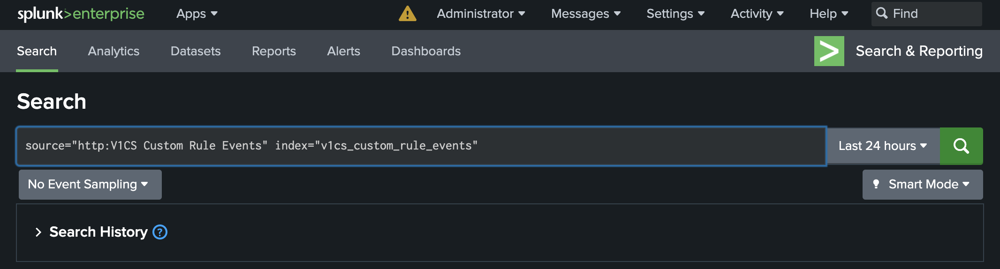

Integrate V1CS Customer Runtime Security Rules with Splunk¶
DRAFT
Challenge ahead!
This scenario is a bit challenging, but you should be able to get through it easily.
Prerequisites¶
- Docker Engine with Compose enabled
- Completed Scenario Splunk Setup
Configure HTTP Event Collector in Splunk¶
Beeing authenticated to Splunk navigate to Settings -> Data -> Data inputs and create a new HTTP Event Collector by clicking [+ Add new] on the right hand side.


Create a V1CS Custom Rule Events

Click [Next], which you will bring to the Input Settings.
On the this page we will create a new indexer first. To do so, click on Create a new index.

Name it v1cs_custom_rule_events, and change App to Splunk Analytics Workspace.
Leave all the rest as default and click [Save].
Back at the Input Settings, move the newly created index to the right by clicking on it.

Proceed with [Review >] in the upper right.
Proceed with [Submit >] in the upper right.

You now want to copy the Token Value and paste it to your notes.
The Token Value is also shown on Settings -> Data -> Data inputs, select HTTP Event Collector which shows our just created collector and the Token Value.
Btw, you need to know the IP address of your docker host later.
Integrate Custom Rules to V1CS¶
Custom Rules for Vision One Container Security do work with any kind of the provided Kubernetes clusters (EKS with EC2 or Fargate, or Kind).
Below, how to do this using the built in Kind cluster:
Prerequisite: Vision One Container Security configured in Playground One configuration.
The above will create the cluster and deploy Container Security.
Next, run the following commands in your shell:
# Create and change to working directory
mkdir -p ${ONEPATH}/customrules
cd ${ONEPATH}/customrules
# Download helm release
tag=2.3.38
curl -LOs https://github.com/trendmicro/cloudone-container-security-helm/archive/refs/tags/${tag}.tar.gz
tar xfz ${tag}.tar.gz
# Navigate to the customrules directory
cd cloudone-container-security-helm-${tag}/config/customrules
Next, we're creating a sample custom rule. Do this by running the following command:
cat <<EOF >./playground_rules.yaml
# ################################################################################
# Information Gathering
# ################################################################################
- macro: container
condition: (container.id != host)
# We create an event, if someone runs an information gathering tool within a container
- list: information_gathering_tools
items:
[
whoami,
nmap,
racoon,
ip,
]
- rule: (PG-IG) Information gathering detected
desc: An information gathering tool is run in a Container
condition: evt.type = execve and evt.dir=< and container.id != host and proc.name in (information_gathering_tools)
output: "Information gathering tool run in container (user=%user.name %container.info parent=%proc.pname cmdline=%proc.cmdline)"
priority: WARNING
EOF
This rule will trigger, when you run the command whoami inside of a container. Nothing serious, but it should show how it works.
After changing back to our working directory with
we create an additional overrides file which enables custom rules in Container Security. Run
splunk_http_event_collector=http://<IP address of your docker host>:8088
splunk_token_value=<Token Value from the previous step>
# Example:
# splunk_http_event_collector=http://192.168.1.122:8088
# splunk_token_value=e21a2ff0-3c17-4be7-9871-2417f3c9e19f
cat <<EOF >./overrides-custom-rules.yaml
cloudOne:
runtimeSecurity:
enabled: true
customRules:
enabled: true
output:
json: true
splunk:
url: ${splunk_http_event_collector}/services/collector/raw
headers:
- "Authorization: Splunk ${splunk_token_value}"
EOF
Now, upgrade the helm deployment of Container Security in your cluster. Run:
helm get values --namespace trendmicro-system container-security | \
helm upgrade container-security \
--namespace trendmicro-system \
--values - \
--values overrides-custom-rules.yaml \
cloudone-container-security-helm-2.3.38
The above basically reads out the current values of the Container Security deployment, adds our overrides to enable custom rules, and upgrades the deployment.
Example upgrade output:
Release "container-security" has been upgraded. Happy Helming!
NAME: container-security
LAST DEPLOYED: Tue Jun 11 12:37:39 2024
NAMESPACE: trendmicro-system
STATUS: deployed
REVISION: 13
TEST SUITE: None
Testing it...¶
Now, let's test what we did. We're quickly creating a shell in our Kubernetes cluster here:
It's just a simple Ubuntu shell what you should get, but it runs as a Pod on your cluster.
Now, run the command whomi which will tell you, that you're root :-).
Now, back to Splunk...
Navigate to Search & Reporting >

As the Search query type:

This should reveal our information gathering attempt...
Look for proc.cmdline=.
Success
Some other Custom Rules You can Play with¶
Simply append the yamls below to your /config/customrules/playground_rules.yaml.
# ################################################################################
# Container Escape
# ################################################################################
- macro: is_kind
condition: container.image startswith "kindest/node:"
# Container Escape with nsenter
# Not 100% sure about the deltatime thing
# Runnig a nsenter -t 1 -m -u -i -n bash will result in four findings if no
# deltatime is defined.
- rule: (PG-ESC) Detect Container Escape (nsenter)
desc: Detect a container escape using nsenter
condition: >
evt.type = setns
and container
and container.privileged=true
and container.image != ""
and evt.deltatime > 8000
and not is_kind
output: >
The command nsenter was used to run a process within the name spaces of another process from within a container
(user=%user.name command=%proc.cmdline parent=%proc.pname pcmdline=%proc.pcmdline gparent=%proc.aname[2]
container=%container.name image=%container.image)
priority: ERROR
tags: [escape]
And don't forget to upgrade the helm deployment of Container Security in your cluster.
helm get values --namespace trendmicro-system container-security | \
helm upgrade container-security \
--namespace trendmicro-system \
--values - \
--values overrides-custom-rules.yaml \
cloudone-container-security-helm-2.3.38
Exploit Container Escape with nsenter:
Start a privileged container in Kubernetes:
kubectl run -it --image=alpine s --restart=Never --rm --overrides '{"spec":{"hostPID":true,"containers":[{"name":"shell","image":"alpine","stdin":true,"tty":true,"command":["/bin/sh"],"securityContext":{"privileged":true}}]}}'
From within the container run: nsenter -t 1 -m -u -i -n sh
With the below we're detecting if a shell is created within a pod, whereby we differentiate if it is a root-shell or a regular user shell.
# ################################################################################
# Shell Usage in Container
# ################################################################################
- macro: spawned_process
condition: (evt.type in (execve, execveat) and evt.dir=<)
- list: shell_binaries
items: [ash, bash, csh, ksh, sh, tcsh, zsh, dash]
- macro: shell_procs
condition: (proc.name in (shell_binaries))
# Detect attach/exec with terminal shell as root or user
- macro: is_user_shell
condition: (proc.vpid!=1 and user.uid!=0)
- macro: is_root_shell
condition: (proc.vpid!=1 and user.uid=0)
- rule: (PG-SHELL) Attach/Exec Pod with Terminal User shell in container
desc: A shell was created inside an unprivileged container with an attached terminal.
condition: >
spawned_process and container
and shell_procs and proc.tty != 0
and is_user_shell
output: >
A shell was spawned in a container with an attached terminal (user=%user.name user_loginuid=%user.loginuid %container.info
shell=%proc.name parent=%proc.pname cmdline=%proc.cmdline terminal=%proc.tty container_id=%container.id image=%container.image.repository)
priority: WARNING
tags: [container, shell, mitre_execution]
enabled: true
- rule: (PG-SHELL) Attach/Exec Pod with Terminal Root shell in container
desc: A shell was created inside a container which runs as root user with an attached terminal.
condition: >
spawned_process and container
and shell_procs and proc.tty != 0
and is_root_shell
output: >
A shell with root privileges was spawned in a container running as root with an attached terminal (user=%user.name
user_loginuid=%user.loginuid %container.info shell=%proc.name parent=%proc.pname cmdline=%proc.cmdline terminal=%proc.tty
container_id=%container.id image=%container.image.repository)
priority: WARNING
tags: [container, shell, mitre_execution]
enabled: true
Trigger:
Find a Pod you want a shell in
and then try to open a shell with